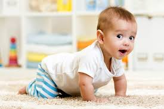

During the first month, your new-born is just getting used to this big, strange new world.
You are getting used to taking care of their many needs.Three-month-old babies also
should have enough upper-body strength to support their head and chest with their arms while lying on their stomach
and enough lower body strength to stretch out their legs and kick. Your baby’s head should no
longer be wobbly. Four-month-olds have pretty good head control while sitting supported, and they
can hold their head and chest upright while lying on their stomach during tummy time. They also can kick and push with their feet. Some babies have
even figured out how to roll from tummy to back at this point. Some 5-month-olds can start rolling over from their back to their tummy.
Once your baby does roll over, you may notice them working their legs and rocking.
They are getting ready for crawling and scooting, which are just a couple of months away! But
remember, when baby is able to roll over, make sure you never leave
them on a bed or other high surface where they can accidentally roll off and get injured. Your 6-month-old can probably roll from their back to their stomach and vice versa.
Some babies can propel themselves around the floor using this rolling method. At seven months, your baby is becoming independent
and developing their own unique personality. Most babies are starting to crawl by now, but don’t be panicked if your 8-month-old isn’t there yet. Some babies take a few extra months to get moving,
and a few go straight from rolling to walking without slowing down to crawl.

Your 10-month-old is
enjoying the freedom of exploring in many different ways. Babies at this age can crawl, pull from a seated position to standing, squat while holding on or sit back down, and cruise around while holding onto the furniture or your hands. Walking is now just a couple of
months away, so you can expect your baby to soon be on the go even more. Your baby should be feeding themselves by now with fingers and starting to explore use of a spoon. Fill your 11-month-old’s diet with a variety of whole grains, fruit, vegetables, dairy products such as cheese and yogurt, and protein, beef, chicken, fish, tofu. Offer a snack in the morning and afternoon to give your baby enough energy to make it through the day. Crackers, fruit, and dry cereal are all good snack options. You will still give 16-20 ounces of breast milk or formula per day, increasing the use of the Sippy cup during the day over a month until you switch entirely.